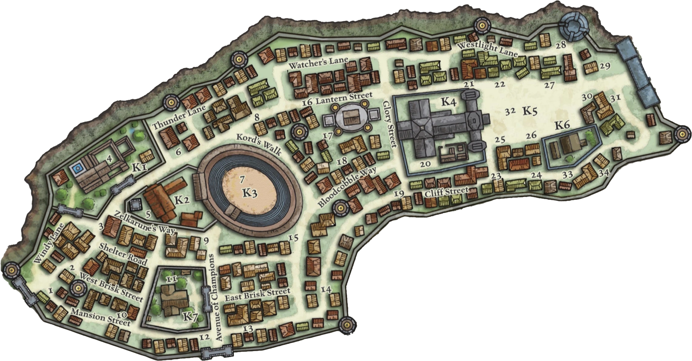

Sasserine Quartier des Champions Présentation du quartier Arène de Sasserine Le cœur des combats publics et des exploits gladiateurs. Auberge du Gros Ventre Une institution du quartier, un endroit où se côtoient les plus grandes légendes vivantes et les guerriers en devenir. Le Vortex des Destins Une diseuse de bonne aventure aux prédictions troublantes. Les Potions de l'Abeille Une boutique de potions bien connue des habitués du quartier. Manoir des Lorchester La demeure de la famille représentante du quartier. Musée de l'Arène Un lieu consacré à la mémoire des combats et des champions. Taverne des Six Épées Une taverne fréquentée par les soldats, les aventuriers et les combattants.